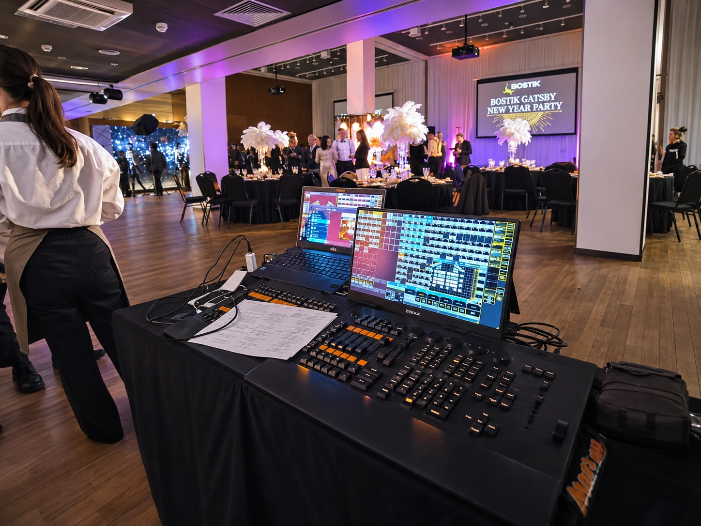
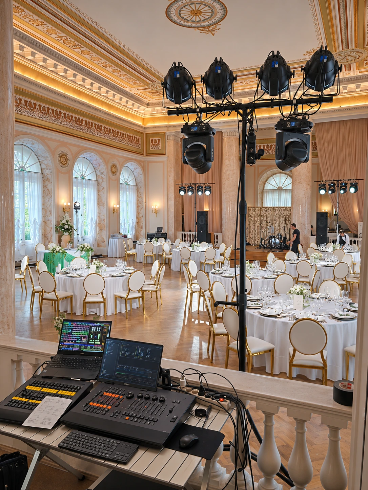

Как работает Hotride.
Мы берём на себя свет и звук. У организатора остаётся один рабочий контакт для обсуждения площадки, музыкантов и программы.
Что выясняем до сметы
Для начала достаточно даты, площадки и нескольких слов о событии. Затем уточняем расстановку, высоту зала, доступную мощность, время на монтаж и ограничения по шуму и дыму. Учитываем комплект площадки и райдер артистов.
На камерном вечере существенную часть бюджета могут занимать доставка, монтаж и смена специалиста. В большом зале на стоимость дополнительно влияют зоны освещения, состав акустики и время подготовки. Поэтому ориентиры на главной служат отправной точкой для разговора.

Кто остаётся на площадке
Монтажная команда расставляет технику и прокладывает коммутацию. Художник по свету готовит сцены на grandMA2 и ведёт программу вживую. Если нужен звук, подключаем звукорежиссёра, который работает с кавер-группами и бэклайном.
Можно заказать художника отдельно для работы на оборудовании площадки. Тогда заранее запрашиваем список приборов и информацию о системе управления.

Частые вопросы
Можно провести мероприятие под шатром?
Да, если техника защищена от осадков. До расчёта согласуем укрытие, размещение приборов и условия подключения на площадке.
Какой звук можно запросить?
Варианты включают акустику Electro-Voice, сабвуферы, микрофоны и бэклайн. Конкретный комплект определяем по залу и райдеру исполнителей.
Что делать, если программа ещё меняется?
Присылайте то, что уже известно. Для первой оценки достаточно формата и площадки. Выходы артистов, музыкальные акценты и тайминг уточним при подготовке.